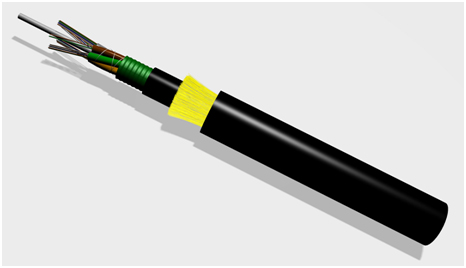

China's Optical & Electrical Cable Industry to Keep ~20% Growth During the 13th Five-Year Plan
China's Optical and Electrical Cable Industry Will Still Maintain 20% Rapid Growth During the 13th Five-Year Plan Period

On May 29, the “Outline of the 13th Five-Year Development Plan for China's Optical and Electrical Cable and Optical Device Industry” was released. The Outline proposes that by the end of the 13th Five-Year Plan period, China's optical and electrical cable industry will complete an industrial output value of RMB 640.758 billion, a year-on-year increase of 20%, with recommended R&D expenditure equal to 5% of that year's gross industrial output value, reaching RMB 32.037 billion by the end of the period.
According to the introduction, the Outline is structured on a 1+16 principle: one master plan plus 16 major categories of specialized products. The 300,000-word planning report presents detailed data across all categories in a clear and well-organized manner.
Over the past five years, Chinese optical and electrical cable and optical device enterprises have closely followed the national development strategy and made strenuous efforts centered on innovation-driven growth and transformation, achieving encouraging results. Relevant data show that by the end of the 12th Five-Year Plan period, the industry's industrial output value had increased by 26% year on year, and its tax contribution to the state reached RMB 90.007 billion. The 31 listed companies in the industry posted total sales of RMB 220.578 billion, accounting for 41.3% of the entire sector. The boundaries of industrial capital are clearly defined, and a structure dominated by private enterprises plus listed companies has basically taken shape. As the industrial structure continues to improve, the market competitiveness of the five major segments — optical fiber preforms, optical fiber and cable, optical devices, strategic emerging industries, and traditional coaxial cables, data cables, railway signal cables and high-frequency electronic cable assemblies — continues to strengthen.
In optical fiber preforms, optical fiber and optical cable, China broke the foreign monopoly on optical fiber preforms by the end of the 12th Five-Year Plan period, raising the domestic production rate from less than 30% to about 80%. Preform technology achieved breakthroughs across the board, and total domestic preform capacity now exceeds 5,000 tons. Manufacturing equipment for optical fiber preforms based on independent intellectual property has been successfully developed, and the total scale has reached RMB 93.5 billion. Optical fiber and cable production capacity is ample, supplying more than half of the global market. Annual capacities for optical fiber and optical cable stand at 240 million km and 280 million fiber-km respectively. There are more than 150 enterprises in total, including about 40 larger optical cable companies, about 20 companies capable of producing both optical fiber and cable, and about 10 companies integrated across optical fiber preform, fiber and cable. China has become the world's largest producer of optical fiber and cable by capacity, and a number of leading enterprises have joined the ranks of international leaders. Complete sets of optical fiber drawing equipment have been localized, and some of this equipment is now being sold overseas. Welded pipe production lines for optical units such as OPGW, OPPC and submarine optical cable have basically achieved domestic production. By the end of the 12th Five-Year Plan period, this industry cluster had completed sales revenue of RMB 133.063 billion, accounting for 24.9% of the entire sector.
China's optical device industry has also entered a new round of growth. During the 12th Five-Year Plan period, there were more than 300 optical device manufacturers in China, including about 90 makers of active optical devices, more than 180 of passive optical devices, and about 30 of modules and subsystems as well as wafers and chips. The industry employed 65,000 people. Optical device sales reached 11.3 billion units, with an output value of RMB 52.4 billion. By the end of the 12th Five-Year Plan period, this industry cluster's total sales revenue had reached RMB 12.1 billion, accounting for 2% of the entire sector.
Optical and electrical cables for strategic emerging industry equipment have emerged as a new force. This segment, together with optical devices, is a major supplier and support provider for emerging industries such as energy and information interconnection networks, and is expected to become an important lever for innovation-driven growth and economic transformation as well as a new engine for “stabilizing growth.” The plan subdivides this emerging industry into nine major product clusters — rail transit vehicles, electric vehicles, marine engineering equipment, industrial robots, photovoltaics, wind turbines, nuclear power, military applications and data. By the end of the 12th Five-Year Plan period, these clusters had completed a total output value of RMB 10 billion, accounting for 1.8% of the entire sector. Products also include coaxial cables, data cables, railway signal cables and installation wires. By the end of the 12th Five-Year Plan period, annual sales revenue of coaxial cables reached RMB 23.902 billion, and that of railway signal cables reached RMB 2.6 billion. Domestic production bases for high-frequency electronic cable assemblies are mainly concentrated in the Pearl River Delta, Yangtze River Delta and Bohai Rim regions; this cluster has a total scale of RMB 329.5 billion, accounting for 61% of the entire sector.
The Outline notes that entering the 13th Five-Year Plan period, the optical and electrical cable and electronic components industry must, through supply-side reform, elevate its development horizon from the domestic market to a global market position, and grasp industry trends from the perspective of the global manufacturing value chain. The guiding philosophy for the industry's 13th Five-Year development must center on seeking progress while maintaining stability and on balanced development, enhancing independent innovation capability through introduction, digestion, absorption and re-innovation, with emphasis on cutting overcapacity, adjusting structure, shoring up weaknesses and raising efficiency. The industry should embrace “Internet Plus” and new smart manufacturing technologies to further strengthen its overall capability across the complete industrial chain from R&D and manufacturing to marketing and operational services.
The Outline also proposes that the whole industry work hard to cut overcapacity and shore up weaknesses while optimizing the industrial structure. During the 13th Five-Year Plan period, qualified enterprises are encouraged to relocate excess capacity overseas, while special attention must be paid to addressing the weak links in the industrial sector. A “quality revolution” is the inevitable path for “Made in China.” In the industry development plan, we have already laid out key priorities in areas such as standards capability, certification body development, brand building, and the creation of intellectual property for well-known trademarks.
The Outline further calls for concentrating superior resources on shoring up weaknesses in raw and auxiliary materials, equipment and high-end manufacturing. The planning report notes the weak link that the development of industry talent resources is not commensurate with industry growth and cannot meet the needs of specialized development. The industry should embrace the Internet and achieve new breakthroughs in smart manufacturing. By the end of the 13th Five-Year Plan period, the rise of smart manufacturing will become the new engine of the next revolution in the optical and electrical cable industry. (Source: People's Daily Online)